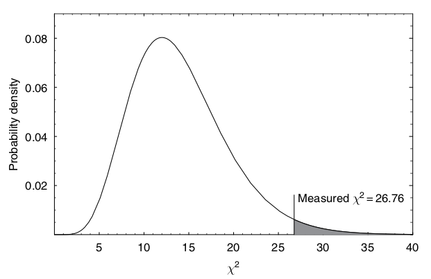
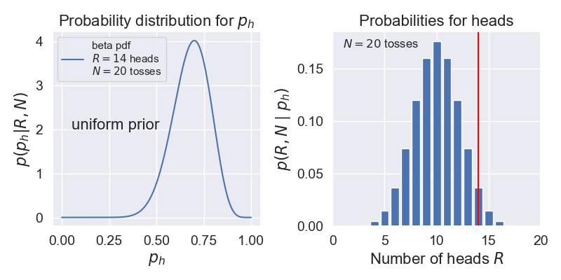

14.1. Frequentist hypothesis testing#
Recall that in frequentist statistics, probability statements are restricted to random variables. A hypothesis can not be considered a random variable, and therefore we are restricted to a much more indirect approach when trying to infer its truth, or rather when attempting to falsify it.
Basic idea#
The standard sampling theory approach to hypothesis testing is to construct a statistical test. The basic idea is described in the following.
Frequentist hypothesis testing. The sampling theory hypothesis test is designed to compare a selected statistic from the measured data with expected results from a very large number of hypothetical repeated measurements under the assumption that a chosen null hypothesis (\(\mathcal{H}_0\)) is true. The null hypothesis is accepted or rejected purely on the basis of how unexpected the data were to \(\mathcal{H}_0\), not on how much better the alternative hypothesis (\(\mathcal{H}_A\)) predicted the data.
The degree of ‘‘unexpectedness’’ is based on a statistic, such as the sample mean or the \(\chi^2\) statistic. The statistic is a random variable and it is chosen so that its distribution can be easily computed given the truth of the null hypothesis. In other words, this is the distribution of the chosen statistic for a very large number of hypothetical repeated measurements under the assumption that the null hypothesis is true. This statistic is then computed for the observed data set and its value is compared with the distribution that is associated with the truth of the null hypothesis. If the statistic from the observed data falls in a very unlikely spot on this distribution (the threshold is to be defined beforehand) we choose to reject the null hypothesis at some confidence level on the basis of the measured data set.
Hypothesis testing with the chi-squared statistic#
A very common statistic to use is the \(\chi^2\) measure. A good example is found in Gregory, ch 7.2.1, with the measurements of flux density from a distant galaxy over a period of 6000 days. The main steps of the presented analysis are the following:
Choose as a null hypothesis that the galaxy has an unknown, but constant, flux density. If we can reject this hypothesis at e.g. the 95% confidence level, then this provides indirect evidence(?) for the alternative hypothesis that the radio emission is variable.
In this example, it is assumed that the measurement errors are independent and identically distributed (iid) according to a normal distribution with a fixed standard deviation \(\sigma\) that is known beforehand.
The \(\chi^2\) statistic from the data set is evaluated (\(x_i\) is the data and \(\bar{x}\) is the average from the sample)
In our example we had 15 data points, but we are using them first to estimate the mean \(\mu\). Therefore, we lose one degree of freedom and are left with 14. This number will determine the form of the \(\chi^2\) distribution that will be used for comparison with our actual \(\chi^2\) statistic.
The question of how unlikely is this value of \(\chi^2\) is by convention interpreted in terms of the area in the tail of the \(\chi^2\) distribution beyond this line. This is called the \(P\)-value or significance.
In some cases, a two-sided statistic should be considered instead.

Fig. 14.1 The \(\chi^2\) distribution for 14 degrees of freedom. The value computed from the measurements of flux density from a galaxy is indicated by a vertical line. The shaded area is the \(P\)-value. It is 2% in this particular example so we would reject the null hypothesis with 98% confidence. (Gregory [Gre05], Fig. 7.2)#
At the point of performing this comparison, and making a final statement, the sampling theory school divides itself into two camps:
One camp uses the following protocol: first, before looking at the data, pick the significance level of the test (e.g. 5%), and determine the critical value of \(\chi^2\) above which the null hypothesis will be rejected. (The significance level is the fraction of times that the statistic \(\chi^2\) would exceed the critical value, if the null hypothesis were true.) Then, compare the actual \(\chi^2\) with the critical value, and declare the outcome of the test, and its significance level (which was fixed beforehand).
The second camp looks at the data, finds \(\chi^2\), then looks in the table of \(\chi^2\)-distributions for the significance level, \(P\), for which the observed value of \(\chi^2\) would be the critical value. The result of the test is then reported by giving this value of \(p\), which is the fraction of times that a result as extreme as the one observed, or more extreme, would be expected to arise if the null hypothesis were true.
\(\chi^2\)/dof for model assessment and comparison#
Many physicists learn to judge whether a fit of a model to data is good or to pick out the best fitting model among several by evaluating the \(\chi^2\)/dof (dof = “degrees of freedom”) for a given model and comparing the result to one. Here \(\chi^2\) is the sum of the squares of the residuals (data minus model predictions) divided by variance of the error at each point:
where \(y_i\) is the \(i^{\text th}\) data point, \(f(x_i;\hat\pars)\) is the prediction of the model for that point using the best fit for the parameters, \(\hat\pars\), and \(\sigma_i\) is the error bar for that data point. The degrees-of-freedom (dof), often denoted by \(\nu\), is the number of data points minus number of fitted parameters:
The rule of thumb is generally that \(\chi^2/\text{dof} \gg 1\) means a poor fit and \(\chi^2/\text{dof} < 1\) indicates overfitting. Where does this come from and under what conditions is it a statistically valid thing to analyze fit models this way? (Note that in contrast to the Bayesian evidence, we are not assessing the model in general, but a particular fit to the model identified by \(\hat\pars\).)
Underlying this use of \(\chi^2\)/dof is a special case of the familiar statistical model
in which the theory is \(y_{\text{th},i} = f(x_i;\hat\pars)\), the experimental error is independent Gaussian distributed noise with mean zero and standard deviation \(\sigma_i\), that is \(\delta y_{\text{expt}} \sim \mathcal{N}(0,\Sigma)\) with \(\Sigma_{ij} = \sigma_i^2 \delta_{ij}\), and \(\delta y_{\text{th}}\) is neglected (i.e., no model discrepancy is included). As a consequence
The likelihood (and the posterior, with an implicitly assumed uniform prior) is then proportional to \(e^{-\chi^2(\hat\pars)/2}\).
According to this model, each term in \(\chi^2\) before being squared is a draw from a standard normal distribution. In this context, “standard” means that the distribution has mean zero and variance 1. This is exactly what happens when we take as the random variables \(\bigl(y_i - f(x_i;\hat\pars)\bigr)/\sigma_i\). But the sum of the squares of \(k\) independent standard normal random variables has a known distribution, called the \(\chi^2\) distribution with \(k\) degrees of freedom. So the sum of the normalized residuals squared should be distributed (if you generated many sets of them) as a \(\chi^2\) distribution. How many degrees of freedom? This should be the number of independent pieces of information. But we have found the fitted parameters \(\hat\pars\) by minimizing \(\chi^2\), i.e., by setting \(\partial \chi^2(\pars)/\partial \theta_j\) for \(j = 1,\ldots,N_{\text{fit parameters}}\), which means \(N_{\text{fit parameters}}\) constraints. Therefore the number of dofs is given by \(\nu = N_{\text{data}} - N_{\text{fit parameters}}\).
Now what do we do with this information? We only have one draw from the (supposed) \(\chi^2\) distribution. But if that distribution is narrow, we should be close to the mean. The mean of a \(\chi^2\) distribution with \(k = \nu\) dofs is \(\nu\), with variance \(2\nu\). So if we’ve got a good fit (and our statistical model is valid), then \(\chi^2/\nu\) should be close to one. If it is much larger, than the conditions are not satisfied, so the model doesn’t work. If it is smaller, than the failure implies that the residuals are too small, meaning overfitting.
But we should expect fluctuations, i.e., we shouldn’t always get the mean (or the mode, which is \(\nu - 2\) for \(\nu\geq 0\)). If \(\nu\) is large enough, then the distribution is approximately Gaussian and we can use the standard deviation / dof or \(\sqrt{2\nu}/\nu = \sqrt{2/\nu}\) as an expected width around one. One might use two or three times \(\sigma\) as a range to consider. If there are 1000 data points, then \(\sigma \approx 0.045\), so \(0.91 \leq \chi^2/{\rm dof} \leq 1.09\) would be an acceptable range at the 95% confidence level (\(2\sigma\)). With fewer data points this range grows significantly. So in making the comparison of \(\chi^2/\nu\) to one, be sure to take into account the width of the distribution, i.e., consider \(\pm \sqrt{2/\nu}\) roughly. For a small number of data points, do a better analysis!
What can go wrong? Lots! See “Do’s and Don’ts of reduced chi-squared” for a thorough discussion. But we’ve made assumptions that might not hold: that the data is Gaussian distributed and independent, that the data is dominated by experimental and not theoretical errors, and that the constraints from fitting are linearly independent. We’ve also assumed a lot of data and we’ve ignored informative (or, more precisely, non-uniform) priors.
p-values: when all you can do is falsify#
A common way for a frequentist to discuss a theory/model, or put a bound on a parameter value, is to quote a p-value. This is set up using something called the null hypothesis. Somewhat perversely you should pick the null hypothesis to be the opposite of what you want to prove. So if you want to discover the Higgs boson, the null hypothesis is that the Higgs boson does not exist.
Then you pick a level of proof you are comfortable with. For the Higgs boson (and for many other particle physics experiments) it is “5 sigma’’. How do you think we convert this statement to a probability? [Hint: refer to a Gaussian distribution.] One minus the resulting probability is called the \(p\)-value. We will denote it \(p_\mathrm{crit}\). There is nothing God-given about it. It is a standard (like “beyond a reasonable doubt”) that has been agreed upon in a research community for determining that something is (likely) going on.
You then take data and compute \(p(D|{\rm null~hypothesis})\). If \(p(D|{\rm null~ hypothesis}) < p_{\rm crit}\) then you conclude that the “the null hypothesis is rejected at the \(p_{\rm crit}\) significance level’’. Note that if \(p(D|{\rm null~hypothesis}) > p_{\rm crit}\) you cannot conclude that the null hypothesis is true. It just means “no effect was observed”.
Exercise
Look at Demo: Widgetized coin tossing. Pick a \(p_{\rm crit}\)-value. If \(p_h=0.4\), work out how many coin tosses it would take to reject the null hypothesis that it’s a fair coin (\(p_h=0.5\)) at this significance level.
Contrast Bayesian and significance analyses for coin flipping#
Suppose we do a coin flipping experiment where we toss a coin 20 times and it comes up heads 14 times. Let’s compare how we might analyze this with Bayesian methods to how we might do a significance analysis with p-values.
Bayesian analysis. Following our study in Demo: Widgetized coin tossing, let’s calculate the probability of heads, which we call \(p_h\), given data \(D = \{R \text{ heads}, N \text{ tosses}\}\).
Let’s assume a uniform prior (encoded as a beta function with \(\alpha=1\), \(\beta=1\)).
We found that this can be expressed as a beta function, which we can calculate in Python using \(p(p_h|D) = p(D|p_h)p(p_h)\) \(\longrightarrow\)
scipy.stats.beta.pdf(p_h,1+R,1+N-R). For \(N=20\), \(R=14\), this is shown on the left below.Now we can answer many questions, such as: what is the probability that \(p_h\) is between \(0.49\) and \(0.51\)? The answer comes from integrating our PDF over this interval (i.e., the area under the curve).
Note that in the Bayesian analysis, the data is given while the probability of heads is a random value.
{kind=link}

Significance test. Here we will try to answer the question: Is the coin fair? We’ll follow the discussion in Wikipedia under p-value titled “Testing the fairness of a coin”.
We interpret “fair” as meaning \(p_h = 0.5\). Our null hypothesis is that the coin is fair and \(p_h = 0.5\).
We plot the probabilities for getting \(R\) heads in \(N=20\) tosses using the binomial probability mass distribution on the right above.
We decide on the significance \(p_{\rm crit} = 0.05\).
Important conceptual question
\(p_{\rm crit}\) and \(p_h\) are both probabilities. Explain what they are the probabilities of and how they are different.
We need to find the probability of getting data at least as extreme as \(D = \{R \text{ heads}, N \text{ tosses}\}\). For our example, that means adding up the binomial probabilities for \(R = 14, 15, \ldots, 20\), which is 0.058. (This is called a “one-tailed test”. If we wanted to consider deviations favoring tails as well, we would would add as well the probabilities for \(R = 0, 1, \ldots, 6\), so \(0.115\) in total. This would be a “two-tailed test”.) Comparing to \(p_{\rm crit} = 0.05\), we find the p-value is greater than \(p_{\rm crit}\), so the null hypothesis is not rejected at the 95% level. (Note that we say “not rejected” as opposed to “accepted”.) If we had gotten 15 heads instead we would have rejected the null hypothesis. We emphasize that in this frequentist analysis, the data is random while \(p_h\) is fixed (although unknown).
Exercise 14.1 (Detailed balance)
Verify that if we had gotten 15 heads in \(N=20\) tosses that we would have rejected the null hypothesis.